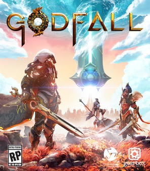

Godfall
 The game is set in a high fantasy setting, split into the realms of Earth, Water, Air, where players take the role of one of the last exalted Knight's Order to prevent a major apocalyptic event. The player has 5 weapon classes to select from, based on which of their armor sets, Valorplates, they equip. These weapon classes include the longsword, dual blades, polearm, two handed war hammer and the two handed great sword. Additional Valorplates and Augments can be equipped to customize how this character class plays out. It supports single player and up to three players in cooperative mode. The game is described as a "looter-slasher" being based on the loot shooter concept of completing missions and gaining better loot for further quests, the focus of the combat is on melee attacks rather than ranged ones.
 The game is a successor to 2014's Hyrule Warriors, and similarly acts as a crossover mixing the characters and universe of Nintendo's The Legend of Zelda series with the gameplay of Koei Tecmo's Dynasty Warriors franchise. Unlike the first Hyrule Warriors, which was set in its own separate universe, Age of Calamity is part of the The Legend of Zelda canon, taking place 100 years before The Legend of Zelda: Breath of the Wild and depicting the Great Calamity, a war frequently mentioned in the original game. This makes Age of Calamity the first The Legend of Zelda game to act as a direct prequel to another entry in the series. In the story, Link and Princess Zelda must gather allies from all across Hyrule to fight the forces led by the evil Calamity Ganon, who is attempting to revive himself and destroy the kingdom.
The game is a successor to 2014's Hyrule Warriors, and similarly acts as a crossover mixing the characters and universe of Nintendo's The Legend of Zelda series with the gameplay of Koei Tecmo's Dynasty Warriors franchise. Unlike the first Hyrule Warriors, which was set in its own separate universe, Age of Calamity is part of the The Legend of Zelda canon, taking place 100 years before The Legend of Zelda: Breath of the Wild and depicting the Great Calamity, a war frequently mentioned in the original game. This makes Age of Calamity the first The Legend of Zelda game to act as a direct prequel to another entry in the series. In the story, Link and Princess Zelda must gather allies from all across Hyrule to fight the forces led by the evil Calamity Ganon, who is attempting to revive himself and destroy the kingdom. In contrast to the previous Yakuza games that focused on the life of Kazuma Kiryu, a man trying to lead a normal life following his removal from the Tojo Clan, this game instead introduces a new protagonist named Ichiban Kasuga. After being imprisoned for eighteen years only to then be betrayed by his former boss, Ichiban goes on a personal quest to become a hero and uncover the reason for his betrayal alongside other playable characters. The game offers both Japanese and English audio to the player.
In contrast to the previous Yakuza games that focused on the life of Kazuma Kiryu, a man trying to lead a normal life following his removal from the Tojo Clan, this game instead introduces a new protagonist named Ichiban Kasuga. After being imprisoned for eighteen years only to then be betrayed by his former boss, Ichiban goes on a personal quest to become a hero and uncover the reason for his betrayal alongside other playable characters. The game offers both Japanese and English audio to the player.